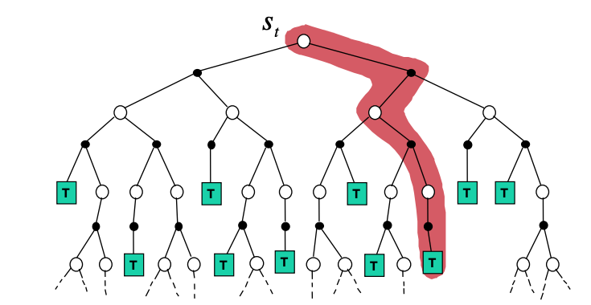
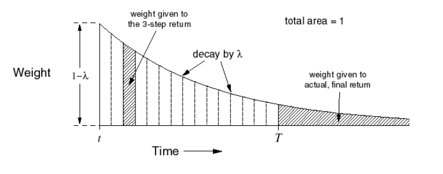

Model-free Prediction
Contents
Model-free Prediction¶
In this chapter we find optimal policy solutions when the MDP is unknown and we need to learn its underlying value functions - also known as the model free prediction problem. The main idea here is to learn value functions via sampling. These methods are in fact also applicable when the MDP is known but its models are simply too large to use the approaches outlined in the MDP section. The two sampling approaches we will cover here are
(incremental) Monte-Carlo (MC) and
Temporal Difference (TD).
Notice that we use capital letters for the estimates of the value functions.
Monte-Carlo (MC) State Value Prediction¶
The value functions \(v_π\) and \(q_π\) can be estimated from experience.
For example, if an agent follows policy \(\pi\) and maintains an average, for each state encountered, of the actual returns that have followed that state, then the average will converge to the state’s value,\(v_π(s)\), as the number of times that state is encountered approaches infinity. If separate averages are kept for each action taken in each state, then these averages will similarly converge to the action values,\(q_π(s,a)\).
We call estimation methods of this kind Monte Carlo methods because they involve averaging over many random samples of returns. In MC prediction more specifically, for every state at time \(t\) we sample one complete trajectory (episode) as shown below.
 Backup tree with value iteration based on the MC approach. MC samples a complete trajectory to the terminating node T shown with red.
There is some rationale of doing so, if we recall that the state-value function that was defined in the introductory MDP section i.e. the expected return.
can be approximated by using the sample mean return over a sample episode / trajectory:
The value function is therefore approximated in MC, by the (empirical or sample) mean of the returns over multiple episodes / trajectories. In other words, to update each element of the state value function:
For each time step \(t\) that state \(s\) is visited in an episode
Increment a counter \(N(s)\) that counts the visitations of the state \(s\)
Calculate the total return \(G^T(s) = G^T(s) + G_t\)
At the end of multiple episodes, the value is estimated as \(V(s) = G^T(s) / N(s)\)
As \(N(s) \rightarrow ∞\) the estimate will converge to \(V(s) \rightarrow v_\pi(s)\).
But we can also do the following trick, called incremental mean approximation:
Using the incremental sample mean, we can approximate the value function after each episode if for each state \(s\) with return \(G_t\),
where \(\alpha = \frac{1}{N(s)}\) can be interpreted as a forgetting factor.
$\alpha$ can also be any number $< 1$ to get into a more flexible sample mean - the _running mean_ that will increase the robustness of this approach in non-stationary environments.
```{admonition} An important fact about Monte Carlo methods is that the estimates for each state are independent. The estimate for one state does not build upon the estimate of any other state, as is the case in DP. In other words, **Monte Carlo methods do not bootstrap**. In particular, note that the computational expense of estimating the value ofa single state is independent of the number of states. This can make Monte Carlo methods particularly attractive when one requires the value of only one or a subset of states.
The policy evaluation problem for action values is to estimate \(q_π(s,a)\), the expected return when starting in states, taking action \(a\), and thereafter following policy \(π\). The Monte Carlo methods for this are essentially the same as just presented for state values.
## Temporal Difference (TD) Prediction
If one had to identify one idea as central and novel to reinforcement learning, it would undoubtedly be temporal-difference(TD) learning. TD learning is a combination of Monte Carlo ideas and dynamic programming (DP) ideas.
* Like Monte Carlo methods, TD methods can learn directly from raw experience without a model of the environment’s dynamics.
* Like DP, TD methods update estimates based in part on other learned estimates, without waiting for a final outcome.
In TD, instead of getting an estimated value function at the end of multiple episodes, we can use the incremental mean approximation to update the value function after each step.

*Backup tree for value iteration with the TD approach. TD samples a single step ahead as shown with red.*
Going back to the example of crossing the room optimally, we take one step towards the goal and the we _bootstrap_ the value function of the state we were in from an estimated return for the remaining trajectory. We repeat this as we go along effectively adjusting the value estimate of the starting state from the true returns we have experienced up to now, _gradually grounding_ the whole estimate as we approach the goal.

*Two value approximation methods: MC (left), TD (right) as converging in their predictions of the value of each of the states in the x-axis. The example is from a hypothetical commute from office back home. In MC you have to wait until the episode ended (reach the goal) to update the value function at each state of the trajectory. In contrast, TD updates the value function at each state based on the estimates of the total travel time. The goal state is "arrive home", while the reward function is time.*
As you can notice in the figure above the solid arrows in the MC case, adjust the predicted value of each state to the _actual_ return while in the TD case the value prediction happens every step in the way. We call TD for this reason an _online_ learning scheme. Another characteristic of TD is that it does not depend on reaching the goal, it _continuously_ learns. MC does depend on the goal and therefore is _episodic_. This is important in many mission critical applications eg self-driving cars where you dont wait to "crash" to apply corrections to your state value based on what you experienced.
Mathematically, instead of using the _true_ return, $G_t$, something that it is possible in the MC as we are trully experiencing the world along a trajectory, TD uses a (biased) _estimated_ return called the _TD target_: $ R_{t+1} + \gamma V(S_{t+1})$ approximating the value function as:
{{<hint danger>}}
$$ V(S_t) = V(S_t) + \alpha \left( R_{t+1} + \gamma V(S_{t+1}) - V(S_t) \right)$$
The difference below is called the TD approximation error,
The TD(\(\lambda\))¶
The TD approach of the previous section, can be extended to multiple steps. Instead of a single look ahead step we can take multiple successive look ahead steps (n), we will call this TD(n) for now, and at the end of the n-th step, we use the value function at that state to backup and get the value function at the state where we started. Effectively after n-steps our return will be:
and the TD(n) learning equation becomes
We now define the so called \(\lambda\)-return that combines all n-step return \(G_t^{(n)}\) via the weighting function shown below as,
 \(\lambda\) weighting function for TD(\(\lambda\))
the TD(n) learning equation becomes
When $\lambda=0$ we get TD(0) learning, while when $\lambda=1$ we get learning that is roughly equivalent to MC. Certainly it is convenient to learn one guess from the next, without waiting for an actual outcome, but can we still guarantee convergence to the correct answer? Happily, the answer is yes as shown in the figure above. For any fixed policy $π$, TD(0) has been proved to converge to $v_π$, in the mean for a constant step-size parameter if it is sufficiently small. However in terms of data efficiency there is no clear winner at this point. It is instructive to see the difference between MC and TD approaches in the following example.